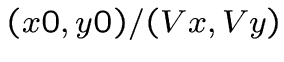
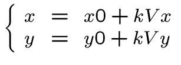
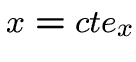
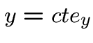
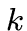
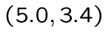

Intersections
 Pour chaque
Pour chaque  , on va chercher les intersections entre la droite
, on va chercher les intersections entre la droite
 et toutes les droites du labyrinthe.
En paramétriques :
 et  ou 
 représente la distance entre nous et le changement de case
(proportionellement à la norme du vecteur  ).
).
Il faut alors déterminer si la case dans laquelle on vient de
rentrer est un mur ou non. En remettant dans l'équation
paramétrique de la droite, on obtient par exemple 
pour notre point d'intersection. Il faut alors aller voir la case
[5][3] de notre tableau.